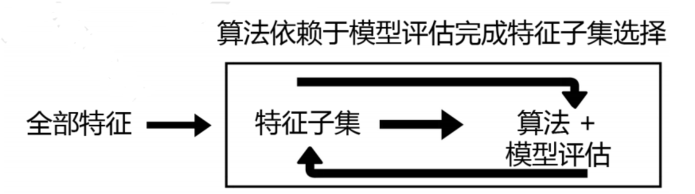

嵌入法
嵌入法是一种让算法自己决定使用哪些特征的方法，即特征选择和算法训练同时进行。在使用嵌入法时，我们先使用某些机器学习的算法和模型进行训练，得到各个特征的权值系数，根据权值系数从大到小选择特征。并且，由于考虑特征对模型的贡献，因此无关的特征（需要相关性过滤的特征）和无区分度的特征（需要方差过滤的特征）都会因为缺乏对模型的贡献而被删除掉，可谓是过滤法的进化版。
sklearn.feature_selection.SelectFromModel (estimator, threshold=None, prefit=False, norm_order=1,
max_features=None)- estimator
使用的模型评估器，只要是带feature_importances_或者coef_属性，或带有l1和l2惩罚项的模型都可以使用 - threshold
特征重要性的阈值，重要性低于这个阈值的特征都将被删除 - prefit
默认False，判断是否将实例化后的模型直接传递给构造函数。如果为True，则必须直接调用fit和transform，不能使用fit_transform，并且SelectFromModel不能与cross_val_score，GridSearchCV和克隆估计器的类似实用程序一起使用。 - norm_order
k可输入非零整数，正无穷，负无穷，默认值为1
在评估器的coef_属性高于一维的情况下，用于过滤低于阈值的系数的向量的范数的阶数 max_features
在阈值设定下，要选择的最大特征数。要禁用阈值并仅根据max_features选择，请设置threshold = -np.inf随机森林中的应用：
1
2
3
4
5from sklearn.feature_selection import SelectFromModel
from sklearn.ensemble import RandomForestClassifier as RFC
RFC_ = RFC(n_estimators =10,random_state=0)
X_embedded = SelectFromModel(RFC_,threshold=0.005).fit_transform(X,y)
# 可以使用学习曲线确认threshold最佳值
- estimator
在嵌入法下，我们很容易就能够实现特征选择的目标：减少计算量，提升模型表现。因此，比起要思考很多统计量的过滤法来说，嵌入法可能是更有效的一种方法。然而，在算法本身很复杂的时候，过滤法的计算远远比嵌入法要快，所以大型数据中，我们还是会优先考虑过滤法。
参考：
特征选择-嵌入
包装法
包装法，根据目标函数（通常是预测效果评分），每次选择若干特征，或者排除若干特征。
- 递归特征消除法
递归消除特征法使用一个基模型来进行多轮训练，每轮训练后，消除若干权值系数的特征，再基于新的特征集进行下一轮训练。1
2
3
4
5
6
7from sklearn.feature_selection import RFE
from sklearn.linear_model import LogisticRegression
#递归特征消除法，返回特征选择后的数据
#参数estimator为基模型
#参数n_features_to_select为选择的特征个数
RFE(estimator=LogisticRegression(), n_features_to_select=2).fit_transform(iris.data,iris.target)